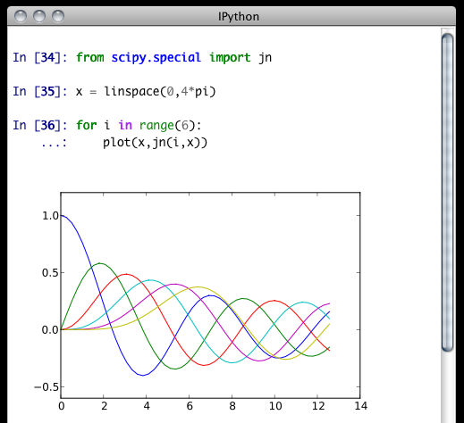
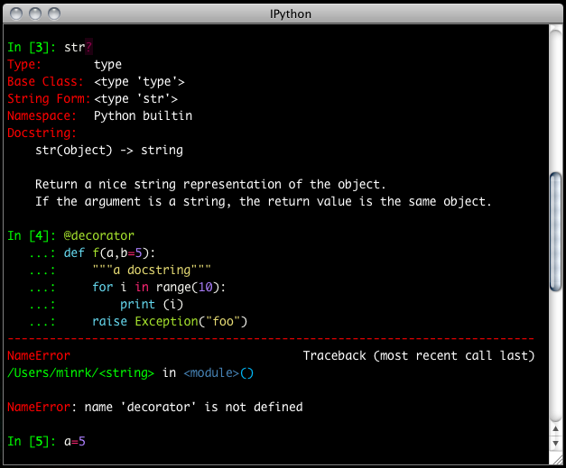

Note
This documentation is for a development version of IPython. There may be significant differences from the latest stable release.
A Qt Console for IPython¶
We now have a version of IPython, using the new two-process ZeroMQ Kernel, running in a PyQt GUI. This is a very lightweight widget that largely feels like a terminal, but provides a number of enhancements only possible in a GUI, such as inline figures, proper multiline editing with syntax highlighting, graphical calltips, and much more.

The Qt console for IPython, using inline matplotlib plots.
To get acquainted with the Qt console, type %guiref to see a quick introduction of its main features.
The Qt frontend has hand-coded emacs-style bindings for text navigation. This is not yet configurable.
Tip
Since the Qt console tries hard to behave like a terminal, by default it immediately executes single lines of input that are complete. If you want to force multiline input, hit Ctrl-Enter at the end of the first line instead of Enter, and it will open a new line for input. At any point in a multiline block, you can force its execution (without having to go to the bottom) with Shift-Enter.
%load¶
The new %load magic (previously %loadpy) takes any script, and pastes its contents as your next input, so you can edit it before executing. The script may be on your machine, but you can also specify an history range, or a url, and it will download the script from the web. This is particularly useful for playing with examples from documentation, such as matplotlib.
In [6]: %load http://matplotlib.org/plot_directive/mpl_examples/mplot3d/contour3d_demo.py
In [7]: from mpl_toolkits.mplot3d import axes3d
...: import matplotlib.pyplot as plt
...:
...: fig = plt.figure()
...: ax = fig.add_subplot(111, projection='3d')
...: X, Y, Z = axes3d.get_test_data(0.05)
...: cset = ax.contour(X, Y, Z)
...: ax.clabel(cset, fontsize=9, inline=1)
...:
...: plt.show()
The %load magic can also load source code from objects in the user or global namespace by invoking the -n option.
In [1]: import hello_world
...: %load -n hello_world.say_hello
In [3]: def say_hello() :
...: print("Hello World!")
Inline Matplotlib¶
One of the most exciting features of the QtConsole is embedded matplotlib figures. You can use any standard matplotlib GUI backend to draw the figures, and since there is now a two-process model, there is no longer a conflict between user input and the drawing eventloop.
{kind=link}
display()¶
IPython provides a function display() for displaying rich representations of objects if they are available. The IPython display system provides a mechanism for specifying PNG or SVG (and more) representations of objects for GUI frontends. When you enable matplotlib integration via the %matplotlib magic, IPython registers convenient PNG and SVG renderers for matplotlib figures, so you can embed them in your document by calling display() on one or more of them. This is especially useful for saving your work.
In [4]: from IPython.display import display
In [5]: plt.plot(range(5)) # plots in the matplotlib window
In [6]: display(plt.gcf()) # embeds the current figure in the qtconsole
In [7]: display(*getfigs()) # embeds all active figures in the qtconsole
If you have a reference to a matplotlib figure object, you can always display that specific figure:
In [1]: f = plt.figure()
In [2]: plt.plot(np.rand(100))
Out[2]: [<matplotlib.lines.Line2D at 0x7fc6ac03dd90>]
In [3]: display(f)
# Plot is shown here
In [4]: plt.title('A title')
Out[4]: <matplotlib.text.Text at 0x7fc6ac023450>
In [5]: display(f)
# Updated plot with title is shown here.
--matplotlib inline¶
If you want to have all of your figures embedded in your session, instead of calling display(), you can specify --matplotlib inline when you start the console, and each time you make a plot, it will show up in your document, as if you had called display(fig)().
The inline backend can use either SVG or PNG figures (PNG being the default). It also supports the special key 'retina', which is 2x PNG for high-DPI displays. To switch between them, set the InlineBackend.figure_format configurable in a config file, or via the %config magic:
In [10]: %config InlineBackend.figure_format = 'svg'
Note
Changing the inline figure format also affects calls to display() above, even if you are not using the inline backend for all figures.
By default, IPython closes all figures at the completion of each execution. This means you don’t have to manually close figures, which is less convenient when figures aren’t attached to windows with an obvious close button. It also means that the first matplotlib call in each cell will always create a new figure:
In [11]: plt.plot(range(100))
<single-line plot>
In [12]: plt.plot([1,3,2])
<another single-line plot>
However, it does prevent the list of active figures surviving from one input cell to the next, so if you want to continue working with a figure, you must hold on to a reference to it:
In [11]: fig = gcf()
....: fig.plot(rand(100))
<plot>
In [12]: fig.title('Random Title')
<redraw plot with title>
This behavior is controlled by the InlineBackend.close_figures configurable, and if you set it to False, via %config or config file, then IPython will not close figures, and tools like gcf(), gca(), getfigs() will behave the same as they do with other backends. You will, however, have to manually close figures:
# close all active figures:
In [13]: [ fig.close() for fig in getfigs() ]
Saving and Printing¶
IPythonQt has the ability to save your current session, as either HTML or XHTML. If you have been using display() or inline matplotlib, your figures will be PNG in HTML, or inlined as SVG in XHTML. PNG images have the option to be either in an external folder, as in many browsers’ “Webpage, Complete” option, or inlined as well, for a larger, but more portable file.
Note
Export to SVG+XHTML requires that you are using SVG figures, which is not the default. To switch the inline figure format to use SVG during an active session, do:
In [10]: %config InlineBackend.figure_format = 'svg'
Or, you can add the same line (c.Inline... instead of %config Inline...) to your config files.
This will only affect figures plotted after making this call
The widget also exposes the ability to print directly, via the default print shortcut or context menu.
Note
Saving is only available to richtext Qt widgets, which are used by default, but if you pass the --plain flag, saving will not be available to you.
See these examples of png/html and svg/xhtml output. Note that syntax highlighting does not survive export. This is a known issue, and is being investigated.
Colors and Highlighting¶
Terminal IPython has always had some coloring, but never syntax highlighting. There are a few simple color choices, specified by the colors flag or %colors magic:
- LightBG for light backgrounds
- Linux for dark backgrounds
- NoColor for a simple colorless terminal
The Qt widget has full support for the colors flag used in the terminal shell.
The Qt widget, however, has full syntax highlighting as you type, handled by the pygments library. The style argument exposes access to any style by name that can be found by pygments, and there are several already installed. The colors argument, if unspecified, will be guessed based on the chosen style. Similarly, there are default styles associated with each colors option.
Screenshot of ipython qtconsole --colors=linux, which uses the ‘monokai’ theme by default:
{kind=link}
Note
Calling ipython qtconsole -h will show all the style names that pygments can find on your system.
You can also pass the filename of a custom CSS stylesheet, if you want to do your own coloring, via the stylesheet argument. The default LightBG stylesheet:
QPlainTextEdit, QTextEdit { background-color: white;
color: black ;
selection-background-color: #ccc}
.error { color: red; }
.in-prompt { color: navy; }
.in-prompt-number { font-weight: bold; }
.out-prompt { color: darkred; }
.out-prompt-number { font-weight: bold; }
/* .inverted is used to highlight selected completion */
.inverted { background-color: black ; color: white; }
Fonts¶
The QtConsole has configurable via the ConsoleWidget. To change these, set the font_family or font_size traits of the ConsoleWidget. For instance, to use 9pt Anonymous Pro:
$> ipython qtconsole --ConsoleWidget.font_family="Anonymous Pro" --ConsoleWidget.font_size=9
Process Management¶
With the two-process ZMQ model, the frontend does not block input during execution. This means that actions can be taken by the frontend while the Kernel is executing, or even after it crashes. The most basic such command is via ‘Ctrl-.’, which restarts the kernel. This can be done in the middle of a blocking execution. The frontend can also know, via a heartbeat mechanism, that the kernel has died. This means that the frontend can safely restart the kernel.
Multiple Consoles¶
Since the Kernel listens on the network, multiple frontends can connect to it. These do not have to all be qt frontends - any IPython frontend can connect and run code. When you start ipython qtconsole, there will be an output line, like:
[IPKernelApp] To connect another client to this kernel, use:
[IPKernelApp] --existing kernel-12345.json
Other frontends can connect to your kernel, and share in the execution. This is great for collaboration. The --existing flag means connect to a kernel that already exists. Starting other consoles with that flag will not try to start their own kernel, but rather connect to yours. kernel-12345.json is a small JSON file with the ip, port, and authentication information necessary to connect to your kernel. By default, this file will be in your default profile’s security directory. If it is somewhere else, the output line will print the full path of the connection file, rather than just its filename.
If you need to find the connection info to send, and don’t know where your connection file lives, there are a couple of ways to get it. If you are already running an IPython console connected to the kernel, you can use the %connect_info magic to display the information necessary to connect another frontend to the kernel.
In [2]: %connect_info
{
"stdin_port":50255,
"ip":"127.0.0.1",
"hb_port":50256,
"key":"70be6f0f-1564-4218-8cda-31be40a4d6aa",
"shell_port":50253,
"iopub_port":50254
}
Paste the above JSON into a file, and connect with:
$> ipython <app> --existing <file>
or, if you are local, you can connect with just:
$> ipython <app> --existing kernel-12345.json
or even just:
$> ipython <app> --existing
if this is the most recent IPython session you have started.
Otherwise, you can find a connection file by name (and optionally profile) with IPython.lib.kernel.find_connection_file():
$> python -c "from IPython.lib.kernel import find_connection_file;\
print find_connection_file('kernel-12345.json')"
/home/you/.ipython/profile_default/security/kernel-12345.json
And if you are using a particular IPython profile:
$> python -c "from IPython.lib.kernel import find_connection_file;\
print find_connection_file('kernel-12345.json', profile='foo')"
/home/you/.ipython/profile_foo/security/kernel-12345.json
You can even launch a standalone kernel, and connect and disconnect Qt Consoles from various machines. This lets you keep the same running IPython session on your work machine (with matplotlib plots and everything), logging in from home, cafés, etc.:
$> ipython kernel
[IPKernelApp] To connect another client to this kernel, use:
[IPKernelApp] --existing kernel-12345.json
This is actually exactly the same as the subprocess launched by the qtconsole, so all the information about connecting to a standalone kernel is identical to that of connecting to the kernel attached to a running console.
Security¶
Warning
Since the ZMQ code currently has no encryption, listening on an external-facing IP is dangerous. You are giving any computer that can see you on the network the ability to connect to your kernel, and view your traffic. Read the rest of this section before listening on external ports or running an IPython kernel on a shared machine.
By default (for security reasons), the kernel only listens on localhost, so you can only connect multiple frontends to the kernel from your local machine. You can specify to listen on an external interface by specifying the ip argument:
$> ipython qtconsole --ip=192.168.1.123
If you specify the ip as 0.0.0.0 or ‘*’, that means all interfaces, so any computer that can see yours on the network can connect to the kernel.
Messages are not encrypted, so users with access to the ports your kernel is using will be able to see any output of the kernel. They will NOT be able to issue shell commands as you due to message signatures, which are enabled by default as of IPython 0.12.
Warning
If you disable message signatures, then any user with access to the ports your kernel is listening on can issue arbitrary code as you. DO NOT disable message signatures unless you have a lot of trust in your environment.
The one security feature IPython does provide is protection from unauthorized execution. IPython’s messaging system will sign messages with HMAC digests using a shared-key. The key is never sent over the network, it is only used to generate a unique hash for each message, based on its content. When IPython receives a message, it will check that the digest matches, and discard the message. You can use any file that only you have access to to generate this key, but the default is just to generate a new UUID. You can generate a random private key with:
# generate 1024b of random data, and store in a file only you can read:
# (assumes IPYTHONDIR is defined, otherwise use your IPython directory)
$> python -c "import os; print os.urandom(128).encode('base64')" > $IPYTHONDIR/sessionkey
$> chmod 600 $IPYTHONDIR/sessionkey
The contents of this file will be stored in the JSON connection file, so that file contains everything you need to connect to and use a kernel.
To use this generated key, simply specify the Session.keyfile configurable in ipython_config.py or at the command-line, as in:
# instruct IPython to sign messages with that key, instead of a new UUID
$> ipython qtconsole --Session.keyfile=$IPYTHONDIR/sessionkey
SSH Tunnels¶
Sometimes you want to connect to machines across the internet, or just across a LAN that either doesn’t permit open ports or you don’t trust the other machines on the network. To do this, you can use SSH tunnels. SSH tunnels are a way to securely forward ports on your local machine to ports on another machine, to which you have SSH access.
In simple cases, IPython’s tools can forward ports over ssh by simply adding the --ssh=remote argument to the usual --existing... set of flags for connecting to a running kernel, after copying the JSON connection file (or its contents) to the second computer.
Warning
Using SSH tunnels does not increase localhost security. In fact, when tunneling from one machine to another both machines have open ports on localhost available for connections to the kernel.
There are two primary models for using SSH tunnels with IPython. The first is to have the Kernel listen only on localhost, and connect to it from another machine on the same LAN.
First, let’s start a kernel on machine worker, listening only on loopback:
user@worker $> ipython kernel
[IPKernelApp] To connect another client to this kernel, use:
[IPKernelApp] --existing kernel-12345.json
In this case, the IP that you would connect to would still be 127.0.0.1, but you want to specify the additional --ssh argument with the hostname of the kernel (in this example, it’s ‘worker’):
user@client $> ipython qtconsole --ssh=worker --existing /path/to/kernel-12345.json
Which will write a new connection file with the forwarded ports, so you can reuse them:
[IPythonQtConsoleApp] To connect another client via this tunnel, use:
[IPythonQtConsoleApp] --existing kernel-12345-ssh.json
Note again that this opens ports on the client machine that point to your kernel.
Note
the ssh argument is simply passed to openssh, so it can be fully specified user@host:port but it will also respect your aliases, etc. in .ssh/config if you have any.
The second pattern is for connecting to a machine behind a firewall across the internet (or otherwise wide network). This time, we have a machine login that you have ssh access to, which can see kernel, but client is on another network. The important difference now is that client can see login, but not worker. So we need to forward ports from client to worker via login. This means that the kernel must be started listening on external interfaces, so that its ports are visible to login:
user@worker $> ipython kernel --ip=0.0.0.0
[IPKernelApp] To connect another client to this kernel, use:
[IPKernelApp] --existing kernel-12345.json
Which we can connect to from the client with:
user@client $> ipython qtconsole --ssh=login --ip=192.168.1.123 --existing /path/to/kernel-12345.json
Note
The IP here is the address of worker as seen from login, and need only be specified if the kernel used the ambiguous 0.0.0.0 (all interfaces) address. If it had used 192.168.1.123 to start with, it would not be needed.
Manual SSH tunnels¶
It’s possible that IPython’s ssh helper functions won’t work for you, for various reasons. You can still connect to remote machines, as long as you set up the tunnels yourself. The basic format of forwarding a local port to a remote one is:
[client] $> ssh <server> <localport>:<remoteip>:<remoteport> -f -N
This will forward local connections to localport on client to remoteip:remoteport via server. Note that remoteip is interpreted relative to server, not the client. So if you have direct ssh access to the machine to which you want to forward connections, then the server is the remote machine, and remoteip should be server’s IP as seen from the server itself, i.e. 127.0.0.1. Thus, to forward local port 12345 to remote port 54321 on a machine you can see, do:
[client] $> ssh machine 12345:127.0.0.1:54321 -f -N
But if your target is actually on a LAN at 192.168.1.123, behind another machine called login, then you would do:
[client] $> ssh login 12345:192.168.1.16:54321 -f -N
The -f -N on the end are flags that tell ssh to run in the background, and don’t actually run any commands beyond creating the tunnel.
See also
A short discussion of ssh tunnels: http://www.revsys.com/writings/quicktips/ssh-tunnel.html
Stopping Kernels and Consoles¶
Since there can be many consoles per kernel, the shutdown mechanism and dialog are probably more complicated than you are used to. Since you don’t always want to shutdown a kernel when you close a window, you are given the option to just close the console window or also close the Kernel and all other windows. Note that this only refers to all other local windows, as remote Consoles are not allowed to shutdown the kernel, and shutdowns do not close Remote consoles (to allow for saving, etc.).
Rules:
- Restarting the kernel automatically clears all local Consoles, and prompts remote Consoles about the reset.
- Shutdown closes all local Consoles, and notifies remotes that the Kernel has been shutdown.
- Remote Consoles may not restart or shutdown the kernel.
Qt and the QtConsole¶
An important part of working with the QtConsole when you are writing your own Qt code is to remember that user code (in the kernel) is not in the same process as the frontend. This means that there is not necessarily any Qt code running in the kernel, and under most normal circumstances there isn’t. If, however, you specify --matplotlib qt at the command-line, then there will be a QCoreApplication instance running in the kernel process along with user-code. To get a reference to this application, do:
from PyQt4 import QtCore
app = QtCore.QCoreApplication.instance()
# app will be None if there is no such instance
A common problem listed in the PyQt4 Gotchas is the fact that Python’s garbage collection will destroy Qt objects (Windows, etc.) once there is no longer a Python reference to them, so you have to hold on to them. For instance, in:
def make_window():
win = QtGui.QMainWindow()
def make_and_return_window():
win = QtGui.QMainWindow()
return win
make_window() will never draw a window, because garbage collection will destroy it before it is drawn, whereas make_and_return_window() lets the caller decide when the window object should be destroyed. If, as a developer, you know that you always want your objects to last as long as the process, you can attach them to the QApplication instance itself:
# do this just once:
app = QtCore.QCoreApplication.instance()
app.references = set()
# then when you create Windows, add them to the set
def make_window():
win = QtGui.QMainWindow()
app.references.add(win)
Now the QApplication itself holds a reference to win, so it will never be garbage collected until the application itself is destroyed.
Embedding the QtConsole in a Qt application¶
In order to make the QtConsole available to an external Qt GUI application (just as IPython.embed() enables one to embed a terminal session of IPython in a command-line application), there are a few options:
- First start IPython, and then start the external Qt application from IPython, as described above. Effectively, this embeds your application in IPython rather than the other way round.
- Use IPython.qt.console.rich_ipython_widget.RichIPythonWidget in your Qt application. This will embed the console widget in your GUI and start the kernel in a separate process, so code typed into the console cannot access objects in your application.
- Start a standard IPython kernel in the process of the external Qt application. See examples/lib/ipkernel_qtapp.py for an example. Due to IPython’s two-process model, the QtConsole itself will live in another process with its own QApplication, and thus cannot be embedded in the main GUI.
- Start a special IPython kernel, the IPython.kernel.inprocess.ipkernel.InProcessKernel, that allows a QtConsole in the same process. See examples/inprocess/embedded_qtconsole.py for an example. While the QtConsole can now be embedded in the main GUI, one cannot connect to the kernel from other consoles as there are no real ZMQ sockets anymore.
Regressions¶
There are some features, where the qt console lags behind the Terminal frontend:
- !cmd input: Due to our use of pexpect, we cannot pass input to subprocesses launched using the ‘!’ escape, so you should never call a command that requires interactive input. For such cases, use the terminal IPython. This will not be fixed, as abandoning pexpect would significantly degrade the console experience.